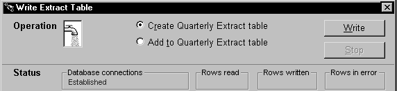
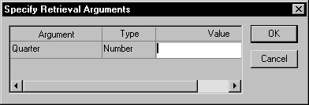
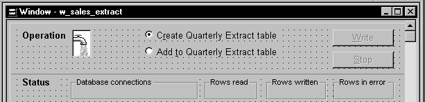
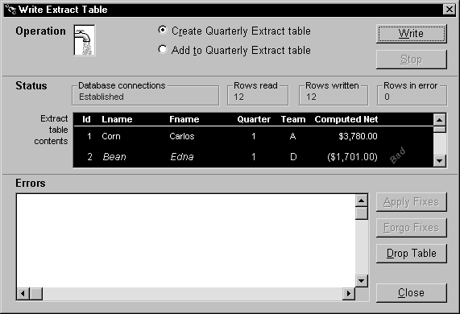

With the setup chores taken care of, you can now start the execution of your pipeline.
 To start pipeline execution:
To start pipeline execution:
Code the Start function in an appropriate script. In this function, you specify:
Test the result of the Start function.
For more information on coding the Start function, see the PowerScript Reference .
The following sample code starts pipeline execution in the order entry application.
Calling the Start function When users want to start their selected pipeline, they click the cb_write CommandButton in the w_sales_extract window:

This executes the Clicked event of cb_write, which contains the Start function:
// Now start piping.
integer li_start_result
li_start_result = iuo_pipe_logistics.Start &
(itrans_source,itrans_destination,dw_pipe_errors)
Notice that the user did not supply a value for the pipeline's retrieval argument (quarter). As a consequence, the Start function prompts the user for it:

Testing the result The next few lines of code in the Clicked event of cb_write check the Start function's return value. This lets the application know whether it succeeded or not (and if not, what went wrong):
CHOOSE CASE li_start_result
CASE -3
Beep (1)
MessageBox("Piping Error", &"Quarterly_Extract table already exists ...
RETURN
CASE -4
Beep (1)
MessageBox("Piping Error", &"Quarterly_Extract table does not exist ...
RETURN
...
END CHOOSE
Testing the Start function's return value is not the only way to monitor the status of pipeline execution. Another technique you can use is to retrieve statistics that your supporting user object keeps concerning the number of rows processed. They provide a live count of:
By retrieving these statistics from the supporting user object, you can dynamically display them in the window and enable users to watch the pipeline's progress.
 To display pipeline row statistics:
To display pipeline row statistics:
Open your supporting user object in the User Object painter.
The User Object painter workspace displays, enabling you to edit your user object.
Declare three instance variables of type StaticText:
statictext ist_status_read, ist_status_written, &
ist_status_error
You will use these instance variables later to hold three StaticText controls from your window. This will enable the user object to manipulate those controls directly and make them dynamically display the various pipeline row statistics.
In the user object's PipeMeter event script, code statements to assign the values of properties inherited from the pipeline system object to the Text property of your three StaticText instance variables.
ist_status_read.text = string(RowsRead)
ist_status_written.text = string(RowsWritten)
ist_status_error.text = string(RowsInError)
Save your changes to the user object, then close the User Object painter.
Open your window in the Window painter.
Insert three StaticText controls in the window:

Edit the window's Open event script (or some other script that executes right after the window opens).
In it, code statements to assign the three StaticText controls (which you just inserted in the window) to the three corresponding StaticText instance variables you declared earlier in the user object. This enables the user object to manipulate these controls directly.
In the sample order entry application, this logic is in a user event named uevent_pipe_setup (which is posted from the Open event of the w_sales_extract window):
iuo_pipe_logistics.ist_status_read = st_status_read
iuo_pipe_logistics.ist_status_written = &
st_status_written
iuo_pipe_logistics.ist_status_error = &
st_status_error
Save your changes to the window. Then close the Window painter.
When you start a pipeline in the w_sales_extract window of the order entry application, the user object's PipeMeter event triggers and executes its code to display pipeline row statistics in the three StaticText controls:

In many cases you will want to provide users (or the application itself) with the ability to stop execution of a pipeline while it is in progress. For instance, you may want to give users a way out if they start the pipeline by mistake or if execution is taking longer than desired (maybe because many rows are involved).
 To cancel pipeline execution:
To cancel pipeline execution:
Code the Cancel function in an appropriate script
Make sure that either the user or your application can execute this function (if appropriate) once the pipeline has started. When Cancel is executed, it stops the piping of any more rows after that moment.
Rows that have already been piped up to that moment may or may not be committed to the destination table, depending on the Commit property you specified when building your Pipeline object in the Data Pipeline painter. You will learn more about committing in the next section.
Test the result of the Cancel function
For more information on coding the Cancel function, see the PowerScript Reference .
The following example uses a command button to let users cancel pipeline execution in the order entry application.
Providing a CommandButton When creating the w_sales_extract window, include a CommandButton control named cb_stop. Then write code in a few of the application's scripts to enable this CommandButton when pipeline execution starts and to disable it when the piping is done.
Calling the Cancel function Next write a script for the Clicked event of cb_stop. This script calls the Cancel function and tests whether or not it worked properly:
IF iuo_pipe_logistics.Cancel() = 1 THEN
Beep (1)
MessageBox("Operation Status", &"Piping stopped (by your request).")
ELSE
Beep (1)
MessageBox("Operation Status", &"Error when trying to stop piping.", &
Exclamation!)
END IF
Together, these features let a user of the application click the cb_stop CommandButton to cancel a pipeline that is currently executing.
When a Pipeline object executes, it commits updates to the destination table according to your specifications in the Data Pipeline painter. You do not need to write any COMMIT statements in your application's scripts (unless you specified the value None for the Pipeline object's Commit property).
For instance, both of the Pipeline objects in the order entry application (pipe_sales_extract1 and pipe_sales_extract2) are defined in the Data Pipeline painter to commit all rows. As a result, the Start function (or the Repair function) will pipe every appropriate row and then issue a commit.
You might want instead to define a Pipeline object that periodically issues commits as rows are being piped, such as after every 10 or 100 rows.
A related topic is what happens with committing if your application calls the Cancel function to stop a pipeline that is currently executing. In this case too, the Commit property in the Data Pipeline painter determines what to do, as shown in Table 17-3.
This is the same commit/rollback behavior that occurs when a pipeline reaches its Max Errors limit (which is also specified in the Data Pipeline painter).
For more information on controlling commits and rollbacks for a Pipeline object, see the PowerBuilder User's Guide .